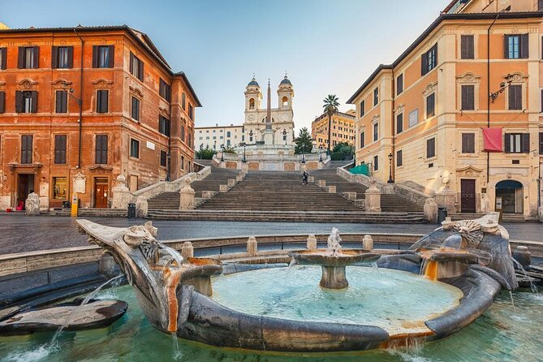
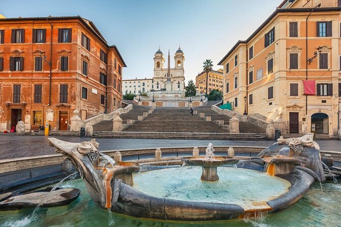

Yellowstone National Park
Yellowstone National Park is a national park located in the western United States, largely in the northwest corner of Wyoming and extending into Montana and Idaho. It was established by the 42nd U.S. Congress with the Yellowstone National Park Protection Act and signed into law by President Ulysses S. Grant on March 1, 1872.
Yellowstone was the first national park in the U.S. and is also widely held to be the first national park in the world.The park is known for its wildlife and its many geothermal features, especially the Old Faithful geyser, one of its most popular. While it represents many types of biomes, the subalpine forest is the most abundant. It is part of the South Central Rockies forests ecoregion.
Photo Gallery (scroll me!)


Shanghai/上海
Shanghai, often referred to as the "Pearl of the Orient," is a dynamic and vibrant metropolis in China. As one of the world's largest cities, Shanghai is a dazzling blend of tradition and modernity. With its iconic skyline featuring towering skyscrapers like the Shanghai Tower and the Oriental Pearl Tower, it's no wonder that Shanghai is often considered the financial and economic hub of Asia. Beyond its impressive architecture, the city boasts a rich cultural heritage, reflected in its historic
Shanghai is not just a city of skyscrapers; it's a city of contrasts. The serene Yu Garden and its classical Chinese architecture offer a peaceful escape from the bustling streets, while the ultra-modern shopping districts like Nanjing Road cater to the desires of avid shoppers.
Photo Gallery (scroll me!)


Rome
Rome is one of the oldest metropolitan areas in the world. With a history dating back to 700 BC with the birth of the Roman Empire, the city has maintained its status as a cultural and historical hub of Europe.
The city is peppered with ancient monuments, statues, and piazzas from different eras of history. The most famous location, the Colosseum, is touted as one of the seven modern wonders of the world. Rome houses several world famous museums, such as the Borghese and the Vatican Museum. It is also the only city in the world to encompass a recognized country, Vatican City.
Photo Gallery (scroll me!)

 
